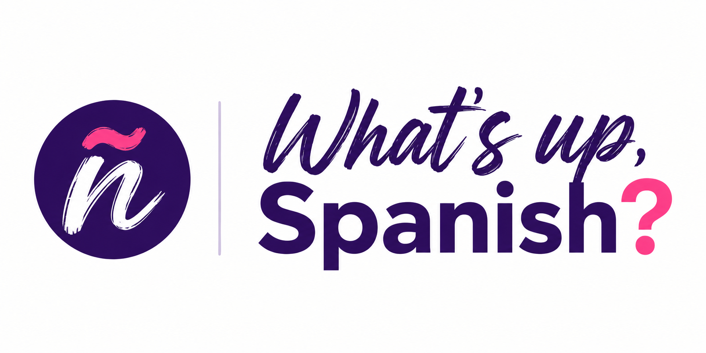
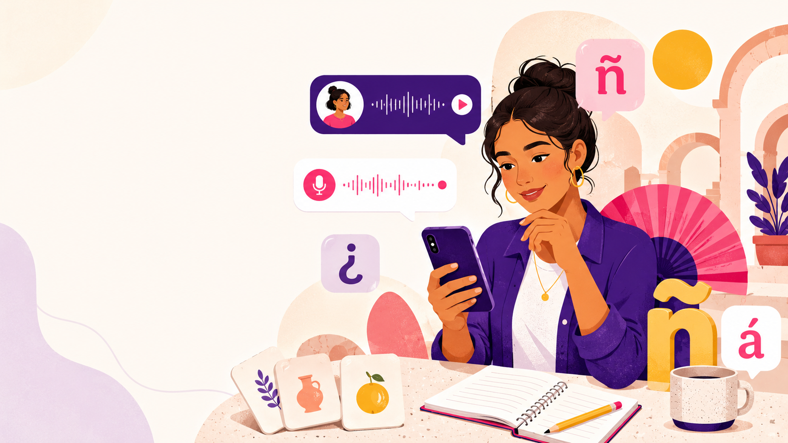
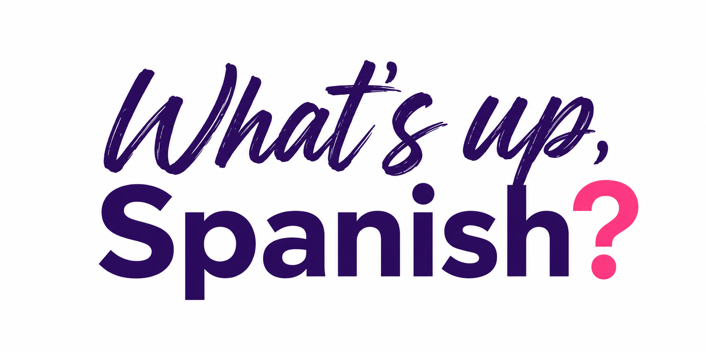

Flexible timingHorarios flexibles
Reply in your own time—before work, on your lunch break or in the evening.Responde cuando tengas tiempo: antes del trabajo, en tu descanso o por la tarde.
Are you finding it hard to start speaking Spanish? If conversations with AI feel artificial and you never seem to find time for classes, you've come to the right place.Use voice notes to have real conversations and genuine interaction with your teacher.Look forward to your classes with their fresh and authentic content. Listen to them wherever and whenever it suits you. ¿Te cuesta soltarte a hablar español? Si las conversaciones con la IA te parecen artificiales y nunca encuentras tiempo para las clases, este es tu sitio.Mantén conversaciones reales con notas de voz, con una interacción real con tu profesor.Te apetecerá hacerlo porque el contenido es actual y auténtico y podrás escuchar tus clases donde y cuando mejor te venga.


Enjoy 15–20 minutes of real conversation on WhatsApp using voice notes with native, qualified teachers. We send you new videos, photos and audio about varied, relevant topics—and then the conversation starts.These conversation classes are for learners with Spanish level A2 or above.Disfruta de 15–20 minutos de conversación real por WhatsApp mediante notas de voz con profesores nativos y acreditados. Te enviamos vídeos, fotos y audios actuales sobre temas variados e interesantes… y empieza la conversación.Son clases de conversación para alumnos a partir de nivel A2 de español.
🎙️
Voice notesNotas de voz
📱
Real contentContenido real
💬
Personal chatConversación personal
Reply in your own time—before work, on your lunch break or in the evening.Responde cuando tengas tiempo: antes del trabajo, en tu descanso o por la tarde.
Enjoy genuine interaction with a native teacher and a natural conversation—without the artificial feeling of many AI apps.Disfruta de una interacción real con un profesor nativo y de una conversación natural, sin la sensación artificial de muchas aplicaciones de IA.
Current, engaging materials—not the same old Spanish of your textbooks.Materiales actuales y atractivos, no el español de los mismos libros de texto de siempre.
Personalised corrections to help you sound clearer, more expressive and more natural.Correcciones personalizadas para expresarte con más claridad y sonar más natural.

Conquer your fear. A relaxed, private format helps you beat your nerves and let your words flow.Vence el bloqueo al hablar. Un formato privado donde puedes soltarte a hablar sin presión y que te ayuda a superar los nervios.
Move beyond basic Spanish. Your teacher’s corrections and feedback will give you better words and structures to use next time.Supera el español básico. Con las correcciones y el feedback de tu profesor podrás usar nuevas palabras y estructuras para sonar más natural la próxima vez.
Make Spanish part of your day. Flexible, bite-sized practice sessions are easy to fit into your day, even when life is busy.Integra el español en tu día. Las sesiones breves y flexibles son más fáciles de integrar en tu día a día y de mantener en el tiempo, aunque estés muy ocupado.
Consistency wins. Affordable sessions make regular, long-term practice possible—and consistency is the real way to improve.La constancia gana. Un precio asequible permite practicar de forma regular y a largo plazo, la única manera real de mejorar.
Learning Spanish is like going to the gym: you have to keep at it if you want results.Aprender español es como ir al gimnasio: la clave está en la constancia.
“Maria’s WhatsApp Spanish course is amazing! The format is so flexible: you get a weekly topic with vocab, videos, and questions, and you respond with a 7-minute audio message whenever it suits your schedule.
Even though it’s all just audio, Maria makes it feel like we are in an ongoing live dialogue. :) Pushing myself to record those 7 minutes helped me get over the fear of making mistakes faster than any traditional class. She’s super attentive and encouraging — highly recommended if you want to finally start speaking naturally!”«¡El curso de español por WhatsApp de María es fantástico! El formato es muy flexible: recibes un tema semanal con vocabulario, vídeos y preguntas, y respondes con un audio de 7 minutos cuando mejor te venga.
Aunque todo sea mediante audios, María consigue que parezca un diálogo en directo y continuo. :) Esforzarme por grabar esos 7 minutos me ayudó a superar el miedo a equivocarme más rápido que cualquier clase tradicional. Es muy atenta y motivadora; totalmente recomendable si por fin quieres empezar a hablar con naturalidad».
Ilma · HungaryIlma · Hungría
“WhatsApp classes with María have been perfect for my busy life. They offer flexibility, without pressure. Most importantly though, Maria is an excellent teacher: friendly, organised and knowledgeable.
Speaking a language is often the biggest challenge (compared to listening or writing), and so it’s an incredibly useful way to build up confidence. I’d highly recommend it.”«Las clases por WhatsApp con María han sido perfectas para mi ajetreada vida. Son flexibles y no hay presión. Pero, sobre todo, María es una profesora excelente: cercana, organizada y con grandes conocimientos.
Hablar un idioma suele ser el mayor reto, en comparación con escuchar o escribir, por lo que es una forma increíblemente útil de ganar confianza. La recomiendo totalmente».
Sarah – UKSarah – Reino Unido
Qualified, experienced and genuinely excited to get you speaking.Acreditados, con experiencia y con muchas ganas de ayudarte a hablar.
María is a native speaker of Spanish and her fluent English means English-speaking learners feel at ease being taught by her. She holds a degree in French Studies from the Complutense University of Madrid and she is fluent in French. She has a diploma in teaching Spanish from the IL3 University of Barcelona and has been teaching Spanish at all levels since 2014. She is based in Madrid. In addition, for more than ten years she has organised the “Time for Spanish” group in Madrid through InterNations, the website for expatriates, where people from other countries meet to practise Spanish and get to know native speakers.María vive en Madrid y es hablante nativa de español y su inglés fluido hace que los alumnos angloparlantes se sientan cómodos aprendiendo con ella. Es licenciada en Filología Francesa por la Universidad Complutense de Madrid y habla francés con fluidez. Tiene un diploma de enseñanza de español por IL3 de la Universidad de Barcelona y enseña español a todos los niveles desde 2014. Además, lleva más de diez años organizando en Madrid el grupo “Time for Spanish” a través de la web para expatriados InterNations, en el cual personas extranjeras se reúnen para practicar español y conocer gente nativa.
Adam is a Spanish-British dual national and is bilingual. He is also fluent in French. He holds a Degree in Hispanic Studies and the Harald Hall Memorial Prize for translation from the University of Liverpool, and a teaching diploma from the University of Cambridge. He teaches English and Spanish at all levels. He is based in Madrid and has been a resident of Spain since 1986.Adam tiene doble nacionalidad española y británica, es bilingüe español-inglés y también habla francés con fluidez. Es licenciado en Filología Hispánica y recibió el premio Harald Hall Memorial de traducción de la Universidad de Liverpool; además, tiene un diploma de enseñanza de la Universidad de Cambridge. Enseña inglés y español a todos los niveles. Vive en Madrid y reside en España desde 1986.
Tell us your level and why you want to start speaking real Spanish with confidence. We’ll explain how it works and send you our plans and rates.Cuéntanos cuál es tu nivel y por qué quieres soltarte a hablar español de verdad. Te explicaremos cómo funciona y te enviaremos nuestros planes y tarifas.
whatsupspanish@gmail.com